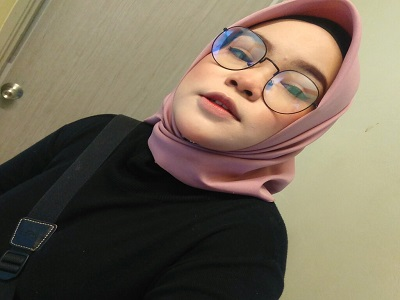

FRIENDS
This is my best friend. Her name is Nurul Ain Izzati Binti Jusoh. She is 21 years old. Our age is the same. She is also my aunt. She was born and raised in Pasir Mas, Kelantan. I am older than her even though she is my aunt. She was born on November 30, 2000. My father is her eldest brother. I call her by the name of Ain. Now she is pursuing her studies in Bachelor of Entrepreneurship (commerce) with Honors at University Malaysia Kelantan (UMK). She lives with my grandparents who live in front of my house. She is a friendly person. We went to school together from kindergarten to form 6. I rode a motorcycle with her to go to school. Even though our house was close, we rarely met because we were busy with each other’s affairs. If we had free time, we would go to town to buy stuff together. We also often visit the house of our friend Nurul Ashikin when we were in form 6 because his parents opened a stall selling food in front of her house.
This is my friend named Nurul Ashikin binti Johari. She is 21 years old. She continued her studies in a Bachelor’s Degree in Counselling at University of Malaysia Terengganu (UMT). I called her by the name of Shikin. Our village is a bit far too. It took at least 15 minutes to get to her house. She was born on 6 October 2000. She has 4 siblings namely 3 girls and a boy. Shikin hobby is going out for a walk in the evening. She is the eldest sister in her family. On holidays and free time, she would help her parents sell along with her other sisters. We first met during high school because we were in the same class. We started close to each other starting from that moment. We also have one thing in common which is we are one who is quieter than another friend. She has a car license and a motorcycle license. But she seldom got in the car because she was still not brave. So did our friend Nurul Ain.

This is my good friend named Nurul Asyikin binti Hasbullah. She is also 21 years old. She was born on February 22, 2000. I called her by the name C-kin. She was a jovial person and loved to enliven our group. She did not continue her studies after high school because she preferred to work . She managed to take a culinary course for a few months before starting her first job in the capital as a barista. The money from her work allowed her to buy a new motorcycle in cash. Apart from working as a barista, she also sells chicken rice and cakes in the morning online in the building where she lives. Her hobbies are cooking and makeup. She is very good at cooking because her mother sells rice in the village. I often spent time with her while in high school. After she worked in Kuala Lumpur, we rarely saw each other because we were busy with our own affairs. We are still in touch via WhatsApp although quite rarely.